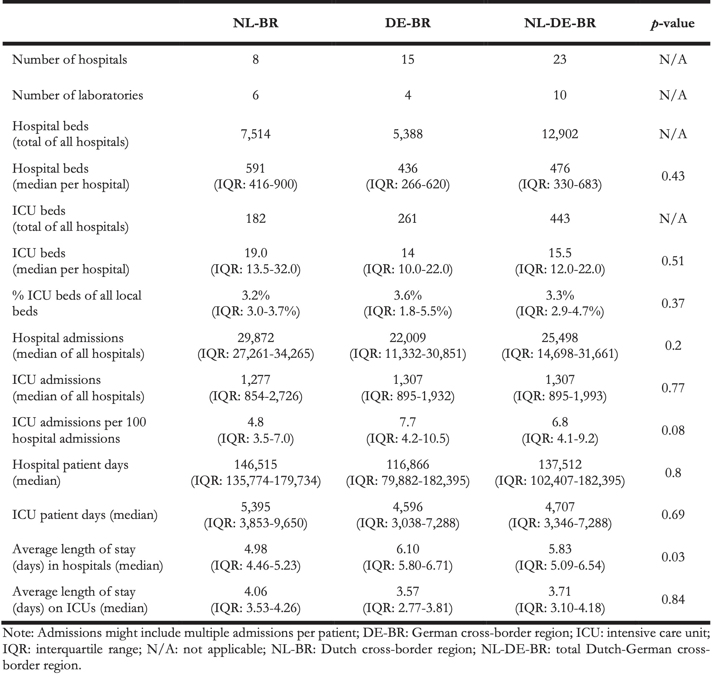
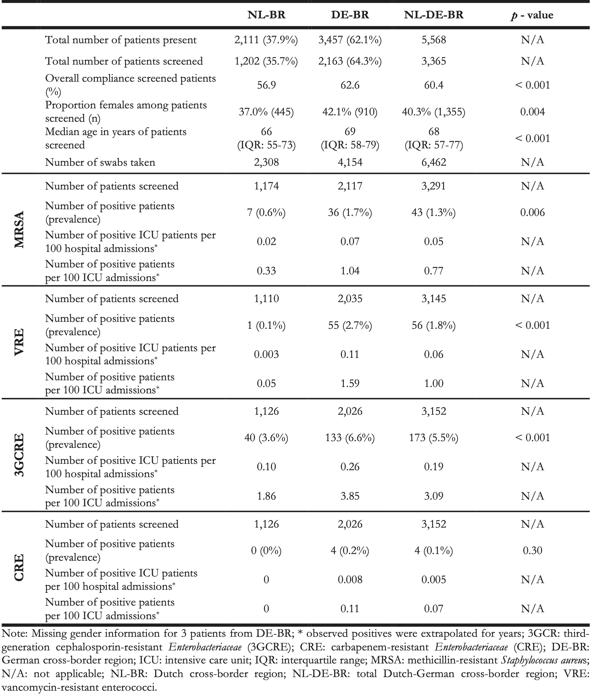

10 A Prospective Multicentre MDRO Screening Study on ICUs in the Dutch-German Cross-Border Region (2017-2018): The Importance of Healthcare Structures
Accepted in Eurosurveillance (ahead of print)
Berends MS 1,2*, Glasner C 2*, Becker K 3,4, Esser J 5, Gieffers J 6, Jurke A 7, Kampinga G 2, Kampmeier S 8, Klont R 9, Köck R 8,10, Al Naemi N 9, Ott A 1, Ruijs G 11, Saris K 12, Tami A 2, Van Zeijl J 13, Von Müller L 14, Voss A 12, Waar K 13, Friedrich AW 2
- Certe Medical Diagnostics and Advice Foundation, Groningen, The Netherlands
- Department of Medical Microbiology and Infection Control, University of Groningen, University Medical Center Groningen, Groningen, The Netherlands
- Institute of Medical Microbiology, University Hospital Münster, Münster, Germany
- Friedrich Loeffler-Institute of Medical Microbiology, University Medicine Greifswald, Greifswald, Germany
- Practice of Laboratory Medicine and University Osnabrück, Department of Dermatology, Environmental Medicine and Health Theory, Osnabrück, Germany
- Institute for Microbiology, Hygiene and Laboratory Medicine, Klinikum Lippe, Detmold, Germany
- North Rhine-Westphalian Centre for Health, Section Infectious Disease Epidemiology, Bochum, Germany
- Institute of Hygiene, University Hospital Münster, Münster, Germany
- Laboratory Microbiology Twente Achterhoek, Hengelo, The Netherlands
- Institute of Hygiene, DRK Kliniken Berlin, Berlin, Germany
- Laboratory for Medical Microbiology and Infectious Diseases, Isala, Zwolle, The Netherlands
- Department of Medical Microbiology, Radboud University Medical Centre and Canisius-Wilhelmina Hospital, Nijmegen, The Netherlands
- Izore, Centre for Infectious Diseases Friesland, Leeuwarden, The Netherlands
- Institute for Laboratory Medicine, Microbiology and Hygiene, Christophorus-Kliniken GmbH, Coesfeld, Germany
* These authors contributed equally
Abstract
Antimicrobial resistance poses a risk for healthcare, both in the community and hospitals. The spread of multi-drug resistant organisms (MDROs) occurs mostly on a local and regional level, following movement of patients, also across national borders. The aim of this observational study was to determine the prevalence of MDROs in a European cross-border region to understand differences and improve infection prevention based on real-time routine data and workflows. Between September 2017 and June 2018, 23 hospitals in the Dutch-German cross-border region (NL-BR and DE-BR) participated in the study. During eight consecutive weeks, patients were screened upon admission to intensive care units (ICUs) for nasal carriage of methicillin-resistant Staphylococcus aureus (MRSA) and rectal carriage of vancomycin-resistant Enterococcus faecium/E. faecalis (VRE), third-generation cephalosporin-resistant Enterobacteriaceae (3GCRE) and carbapenem-resistant Enterobacteriaceae (CRE). All samples were processed in the associated laboratories. A total of 3,365 patients were screened (NL-BR: 1,202, DE-BR: 2,163). The median screening compliance was 60.4% (NL-BR: 56.9%, DE-BR: 62.9%). The MDRO prevalence was higher in the DE-BR than in the NL-BR, namely 1.7% vs 0.6% for MRSA (p = 0.006), 2.7% vs 0.1% for VRE (p < 0.001) and 6.6% vs 3.6% for 3GCRE (p < 0.001), whereas the prevalence for CRE was comparable, with 0.2% in DE-BR ICUs vs 0.0% in NL-BR ICUs. This first prospective multi-centre screening study in a European cross-border region, shows high heterogenicity in MDRO carriage prevalence on NL-BR and DE-BR ICUs. This indicates that the prevalence is influenced by the different healthcare structures.
10.1 Introduction
Antimicrobial resistance (AMR) is a growing public health threat worldwide. Like global pandemics, multi-drug resistant bacteria pose one of the largest health risks to humans both in the community and within healthcare facilities [1,2]. Specifically, hospitals are exposed to this risk and are challenged at multiple levels, e.g., the individual patient, the healthcare team, the organization and the political and economic environment. In hospitals, patients colonised and/or infected with multi-drug resistant organisms (MDROs) lead to higher costs, have prolonged hospital stays, have higher risks for complications, and an increased morbidity and mortality [3,4]. To decrease these risks, the World Health Organization (WHO) urgently advised to change the way antibiotics are prescribed, and in addition highlighted that behavioural changes, resulting from the implementation of infection prevention measures, are indispensable to successfully combat AMR [5,6]. According to WHO analyses, one key pitfall is that international AMR surveillance is neither coordinated nor harmonised and that there are still information gaps, especially with respect to twelve MDROs, which have been categorised as urgently requiring new antibiotics and improved combat strategies [6,7]. These MDROs include amongst others: methicillin-resistant Staphylococcus aureus (MRSA), carbapenem-resistant Enterobacteriaceae (CRE), extended spectrum beta-lactamase (ESBL)-producing Enterobacteriaceae and vancomycin-resistant Enterococcus faecium (VRE) [7].
The prevalence of such MDROs varies not only between countries, but also between different regions (henceforth called healthcare regions), within one country or comprising a cross-border region, such as the Dutch-German cross-border region [8,9]. Hospital transfer of patients within or between healthcare regions (i.e., from a local or regional hospital to a university medical centre or vice versa) can be a substantial driver of AMR [9]. Thus, prevalence estimates of MDROs at regional level may better reflect the actual reality and allow the implementation of interventions more effectively. This is of utmost importance especially since the European Union (EU) directive from 2011 allows patients to seek medical treatment in any EU country. As approx. 30% of all EU citizens live in a cross-border region, this underlines the importance of a non-national-only, but a regional cross-border approach.
The Dutch-German cross-border region has been at the forefront in cooperating in the domain of AMR and infection prevention since 2005 with the support of European INTERREG programmes (www.deutschland-nederland.eu). Ever since, the projects developed within the INTERREG program have been denoted a ‘best practice’ for studying the prevalence of MDRO in a European cross-border region (Interact, European Cooperation Day, 2013). Importantly, among all cross-border regions in Europe, the Dutch-German cross-border region exhibits the most frequent exchange of citizens, with 74% of Germans and Dutch citizens living close to the border indicating to have visited the other country [10]. On top of that, patient movements, exchange of patients between different healthcare institutes, across this particular border occur on a regular basis [9].
A recently published comparison of the national Dutch and German guidelines on Gram-negative MDROs urged the usage of consistent terminology and harmonised diagnostic procedures for the improvement of infection prevention, treatment and patient safety [11]. Gathering and comparing regional data from both sides of the border was considered essential because of two reasons. Firstly, the EU treaty of Lisbon and directives in vigour will lead to an increasing number of patients seeking medical treatment in a neighbouring country. Secondly, particularly in cross-border regions between two high-income countries with cost-extensive, highly advanced and technological driven healthcare systems, the number of neonates, immuno-compromised and elderly patients that are seeking treatment will continue to increase [12].
With the advancements in healthcare, the demographic changes and increase in the number of multimorbidity, intensive care units (ICUs) have become the main hubs for patients in any hospital [13,14]. ICUs represent a distinct hospital environment with high-frequent contact between specially trained hospital staff and critically ill patients requiring advanced technology and increased antibiotic prescription [15]. Thus, ICUs are hotspots for the emergence and transmission of MDROs, frequently causing infections in these critically ill patients [16].
Therefore, the aim of this observational prospective multicentre screening study was to determine the prevalence of selected MDROs on admission to adult ICUs in the Dutch-German cross-border region based on real-time routine data and workflows and to correlate those with the existing healthcare structures.
10.2 Methods
10.2.1 Study Design
This observational prospective multicentre screening study was carried out between the 1st of September 2017 and the 18th of June 2018 in the Dutch-German cross-border region (NL-DE-BR) to determine the prevalence of MDROs on adult ICUs. All adult patients (≥18 years) were included in the study. The screening period for all hospitals lasted eight consecutive weeks (Supplementary Figure 1). A total of 23 hospitals, eight Dutch and 15 German, participated in this study. The 23 hospitals were served by ten laboratories, six on the Dutch (Dutch border region; NL-BR) and four on the German (German border region; DE-BR) side. Both regions have a similar geographical size, population density and type of hospital care (one university hospital, several secondary care hospitals). During the screening period, each participating hospital aimed at screening all patients at admission to their participating ICU for nasal carriage of MRSA and rectal carriage of VRE (both E. faecium and E. faecalis), 3GCRE and CRE. For the definition of 3GCRE, the European Centre for Disease Prevention and Control (ECDC) guideline was followed: all of cefotaxime, ceftazidime and ceftriaxone were considered. Moreover, although defined as Enterobacteriaceae, the present study focussed solely on Escherichia coli and Klebsiella spp. An overview of all MDRO definitions used in this study is summarised in the Supplementary Material. All samples were processed at the associated routine diagnostic laboratory, which were all ISO certified at the time of the study, following local standard operating procedures which were adapted to the study protocol when necessary (Supplementary Material Table 1). Bacterial species were confirmed by matrix-assisted laser desorption/ionisation time-of-flight (MALDI-TOF) mass spectrometry and antibiotic susceptibility was determined using VITEK 2 automated systems with EUCAST (European Committee on Antimicrobial Susceptibility Testing) clinical breakpoints [17]. Moreover, data about the number of beds per hospital and ICU, hospital and ICU admissions and hospital and ICU patient days were provided by all participating hospitals for 2016.
10.2.2 Statistical Analysis & Software
Data analysis was done in R using the software application RStudio and the R package AMR (R v4.0.2, RStudio v1.3.959 and AMR package v1.3.0), which are all free, open-source and publicly available [18].
Contingency tables were tested with Fisher’s exact test when the size was 2x2 and Chi2 tests otherwise. To test for equality in prevalence between countries, the exact binomial test was used. Outcomes of statistical tests were considered significant when two-sided p < 0.05.
10.2.3 Ethics
The medical ethical committee of the University Medical Center Groningen (UMCG, The Netherlands) was informed and patients or their relatives were approached to voluntarily participate in the study. Ethical approval and informed consent were not required (METc 2015.535). All data were collected in accordance with the European Parliament and Council decisions on the epidemiological surveillance and control of communicable disease in the European Community. The board of directors of all other participating hospitals agreed to conduct the study.
10.3 Results
10.3.1 Healthcare structure of the participating hospitals
Between the 1st of September 2017 and the 18th of June 2018, 23 hospitals in the NL-DE-BR participated in the study, eight in the NL-BR and 15 in the DE-BR. The total number of beds from all participating ICUs was 443 beds (NL-BR: 182 [41.1%], DE-BR: 261 [58.9%]). The bed capacity of the ICUs in relation to the respective hospital bed capacity did not differ between hospitals within either country or between the two countries (NL-BR: 3.2% [IQR: 3.0-3.7%], DE-BR: 3.6% [IQR: 1.8-5.5%]). The participating hospitals are characterised by the data shown in Table 1.
Table 1. Overview of the number of hospitals, laboratories, number of beds per hospital and ICU, hospital and ICU admissions, hospital and ICU patient days and average length of stay, Dutch-German cross-border region, 2016.

10.3.2 Study population and screening samples from ICUs
A total of 3,365 patients were screened: 1,202 (35.7%) on NL-BR and 2,163 (64.3%) on DE-BR ICUs (Table 2). The screening period per hospital lasted eight consecutive weeks (56 days, IQR: 55-58 days, Supplementary Figure 1). In both, NL-BR and DE-BR, significantly more males than females were screened (p < 0.001) and in NL-BR relatively less females were screened than in DE-BR (p < 0.01). The median age of all screened patients was 68 years (IQR: 57-77), while patients in DE-BR were significantly older than patients in the NL-BR (p < 0.001).
A total of 6,462 swabs were taken, 2,308 (35.7%) in NL-BR and 4,154 (64.3%) in DE-BR ICUs. Of those, 3,292 were taken from the nasopharynx and 3,170 were from the rectum. The overall screening compliance (screened for at least one MDRO group) was 60.4% (3,365 out of 5,568). For ICUs in the NL-BR this was 56.9% (1,202 out of 2,111) and for ICUs in the DE-BR this was 62.9% (2,163 out of 3,457), p < 0.001. The median screening compliance for all four MDRO groups (i.e., nasopharyngeal swab for MRSA, rectal swab for VRE, 3GCRE and CRE) on the other hand was in total 55.3% (3,081 out of 5,568), and 52.1% (1,100 out of 2,111) in NL-BR and 57.3% (1,981 out of 3,457) in DE-BR ICUs (p < 0.001). Most patients (91.5% for NL-DE-BR ICUs) that were screened while present on the ICU were screened for all MDRO groups.
In total, 3,291 patients were screened for MRSA (1,174 [35.7%] in NL-BR and 2,117 [64.3%] in DE-BR ICUs), 3,145 for VRE (1,110 [35.3%] in NL-BR and 2,035 [64.7%] in DE-BR ICUs) and 3,152 for 3GCRE (1,126 [35.7%] in NL-BR and 2,026 [64.3%] in DE-BR ICUs). Of note, in some patients multiple MDROs were found from the same or different species, meaning that some patients are included in multiple MDRO groups.
Table 2. Overview of total number of patients present and screened, swabs and type of bacteria tested for in NL-BR and DE-BR, September 2017 – June 2018.

10.3.3 Prevalence of Gram-positive MDROs: MRSA and VRE
The overall prevalence for MRSA carriage at ICU admission was 1.3% (43 out of 3,291), and for VRE carriage 1.8% (56 out of 3,145). The prevalence was higher in DE-BR than in NL-BR ICUs, namely 1.7% (36 of 2,117) vs 0.6% (7 of 1,174) for MRSA (p = 0.006) and 2.7% (55 of 2,035) vs 0.1% (1 of 1,110) for VRE (p < 0.001), respectively (Figure 1). The prevalence ranged from 0% to 1.5% in NL-BR ICUs and from 0% to 4.1% in DE-BR ICUs for MRSA and from 0% to 0.3% in NL-BR ICUs and from 0% to 4.8% in DE-BR ICUs for VRE (Figure 1). An overview of all isolated MRSA and VRE isolates can be found in the Supplementary Table 2. Notably, all 56 cases of VRE were caused by E. faecium.
![Prevalence of MRSA and VRE in NL-BR ICUs, in DE-BR ICUs and in both cross-border regions together (NL-DE-BR ICUs). Numbers above in squares represent the number of positive patients divided by the total number of patients screened for the respective pathogen with the calculated prevalence. Boxplots show the median prevalence in participating ICUs (thick line within each box), the first and third quartile (upper and lower border of the box, the difference is the IQR), and the whiskers with error bars represent 1.5 times the IQR denoting the normal range. The dots are outside this range. DE-BR: German cross-border region; ICU: intensive care unit; IQR: interquartile range; MRSA: methicillin-resistant *Staphylococcus aureus*; NL-BR: Dutch cross-border region; NL-DE-BR: total Dutch-German cross-border region; VRE: vancomycin-resistant enterococci.](images/10-01.jpg)
Figure 10.1: Prevalence of MRSA and VRE in NL-BR ICUs, in DE-BR ICUs and in both cross-border regions together (NL-DE-BR ICUs). Numbers above in squares represent the number of positive patients divided by the total number of patients screened for the respective pathogen with the calculated prevalence. Boxplots show the median prevalence in participating ICUs (thick line within each box), the first and third quartile (upper and lower border of the box, the difference is the IQR), and the whiskers with error bars represent 1.5 times the IQR denoting the normal range. The dots are outside this range. DE-BR: German cross-border region; ICU: intensive care unit; IQR: interquartile range; MRSA: methicillin-resistant Staphylococcus aureus; NL-BR: Dutch cross-border region; NL-DE-BR: total Dutch-German cross-border region; VRE: vancomycin-resistant enterococci.
10.3.4 Prevalence of Gram-negative MDRO: 3GCRE and CRE
The overall prevalence at ICU admission for 3GCRE carriage was 5.5% (173 out of 3,152) and 0.1% (4 out of 3,152) for CRE carriage. The prevalence for 3GCRE was significantly higher in DE-BR than in NL-BR ICUs, namely 6.6% (133 out of 2,026) vs 3.6% (40 out of 1,122), p < 0.001, whereas the prevalence for CRE was comparable, with 0.0% (0 out of 1,126) in NL-BR ICUs vs 0.2% (4 out of 2,026) in DE-BR ICUs (Figure 2 and Table 2). Most of the isolated 3GCRE were E. coli isolates, namely 166 (92.2%). Twelve isolates were K. pneumoniae (6.8%), one K. variicola (0.6%) and one K. oxytoca (0.6%). The four CRE isolates were found in three different DE-BR ICUs, three were E. coli and one was a K. pneumoniae isolate. The prevalence for 3GCRE differed within both countries between hospitals, ranging from 0% to 10.0% in NL-BR ICUs and from 2.3% to 15.2% in DE-BR ICUs (Figure 2). Table 2 presents an overview of the prevalence of MRSA, VRE, 3GCRE and CRE. An overview of all isolated 3GCRE and CRE isolates can be found in the Supplementary Table 2.
![Prevalence of 3GCRE and CRE in NL-BR ICUs, in DE-BR ICUs and in both cross-border regions together (NL-DE-BR ICUs). Numbers above in squares represent the number of positive patients divided by the total number of patients screened for the respective pathogen with the calculated prevalence. 3GCR: third-generation cephalosporin-resistant *Enterobacteriaceae*, CRE: carbapenem-resistant *Enterobacteriaceae*; DE-BR: German cross-border region; NL-BR: Dutch cross-border region; NL-DE-BR: total Dutch-German cross-border region.](images/10-02.jpg)
Figure 10.2: Prevalence of 3GCRE and CRE in NL-BR ICUs, in DE-BR ICUs and in both cross-border regions together (NL-DE-BR ICUs). Numbers above in squares represent the number of positive patients divided by the total number of patients screened for the respective pathogen with the calculated prevalence. 3GCR: third-generation cephalosporin-resistant Enterobacteriaceae, CRE: carbapenem-resistant Enterobacteriaceae; DE-BR: German cross-border region; NL-BR: Dutch cross-border region; NL-DE-BR: total Dutch-German cross-border region.
10.3.5 Prevalence of Gram-negative MDROs based on Dutch and German definitions
The national guidelines for The Netherlands and Germany differ greatly in the way Gram-negative MDROs are being defined (while definitions for MRSA and VRE are identical) [12,19]. An overview of the specific Dutch and German definitions of MDROs is summarised in the Supplementary Material.
The German national infection prevention guideline classifies Gram-negative MDROs into 3MRGN and 4MRGN (German: ‘Multiresistente Gram-negative Stäbchen,’ multidrug-resistant Gram-negative rods) based on phenotypic susceptibility. When the German MRGN definition is being applied to all Gram-negative isolates, the overall prevalence for 3MRGN is 2.9% (91 out of 3,152) and for 4MRGN 0.1% (4 out of 3,152). The prevalence was significantly lower in NL-BR than in DE-BR ICUs for 3MRGN, namely 1.1% (12 out of 1,126) vs 3.9% (79 out of 2,026) [p < 0.001], whereas the prevalence for 4MRGN was comparable, namely 0% (0 out of 1,126) vs 0.2% (4 out of 2,026) [p = 0.30] (Figure 3). The prevalence for 3MRGN differed within both countries between hospitals, ranging from 0% to 5.0% in NL-BR and from 1.2% to 10.9% in DE-BR ICUs. The four 4MRGN were three E. coli isolates and one K. pneumoniae isolate and originated from three different DE-BR ICUs. Of note, for the definition of 3MRGN, piperacillin results could not be included since only results for piperacillin-tazobactam were reported.
The Dutch national guideline defines exceptional resistant microorganisms as BRMO (‘Bijzonder Resistente Microorganismen’) using strict interpretation guidelines [20]. When the Dutch BRMO definition is applied to all Gram-negative isolates, the overall BRMO prevalence is 5.6% (176 out of 3,152). The prevalence was lower in NL-BR than in DE-BR ICUs, namely 3.9% (44 out of 1,126) vs 6.5% (132 out of 2,026) for BRMOs [p = 0.002] (Figure 3). The prevalence for BRMO differed within both countries between hospitals, ranging from 0% to 10.0% in NL-BR and from 2.3% to 15.2% in DE-BR ICUs.
![Prevalence of 3MRGN, 4MRGN and BRMO in NL-BR ICUs, DE-BR ICUs and both cross-border regions together (NL-DE-BR ICUs). Numbers above in squares represent the number of positive patients divided by the total number of patients screened for the respective pathogen with the calculated prevalence. 3MRGN: Multiresistente Gram-negative Stäbchen mit Resistenz gegen 3 der 4 Antibiotikagruppen (multiresistant Gram-negative rods with resistance to 3 of the 4 antibiotic groups); 4MRGN: Multiresistente Gram-negative Stäbchen mit Resistenz gegen 4 der 4 Antibiotikagruppen (multidrug-resistant Gram-negative rods with resistance to 4 of the 4 antibiotic groups); BRMO: bijzonder-resistente microorganism (particularly resistant microorganisms); NL-BR: Dutch cross-border region; NL-DE-BR: total Dutch-German cross-border region.](images/10-03.jpg)
Figure 10.3: Prevalence of 3MRGN, 4MRGN and BRMO in NL-BR ICUs, DE-BR ICUs and both cross-border regions together (NL-DE-BR ICUs). Numbers above in squares represent the number of positive patients divided by the total number of patients screened for the respective pathogen with the calculated prevalence. 3MRGN: Multiresistente Gram-negative Stäbchen mit Resistenz gegen 3 der 4 Antibiotikagruppen (multiresistant Gram-negative rods with resistance to 3 of the 4 antibiotic groups); 4MRGN: Multiresistente Gram-negative Stäbchen mit Resistenz gegen 4 der 4 Antibiotikagruppen (multidrug-resistant Gram-negative rods with resistance to 4 of the 4 antibiotic groups); BRMO: bijzonder-resistente microorganism (particularly resistant microorganisms); NL-BR: Dutch cross-border region; NL-DE-BR: total Dutch-German cross-border region.
10.3.6 Comparison of MDRO prevalence between NL-BR and DE-BR ICUs in university and non-university hospitals
For NL-BR ICUs, the prevalence of all MDRO groups was not significantly different between the non-university and the university hospital (Figure 4). This was different for the participating DE-BR ICUs where the prevalence of 3GCRE [p < 0.001], 3MRGN [p = 0.005] and BRMO [p < 0.001] were significantly higher in the non-university hospitals (Figure 4). Interestingly, the prevalence of almost all investigated MDROs was not significantly different between the two university hospitals, except for the prevalence of VRE, which was significantly higher in the German university ICU [p < 0.001]. Comparing the prevalence of all investigated MDROs between NL-BR and DE-BR non-university hospital ICUs revealed a significant difference for VRE [p < 0.001], 3GCRE [p < 0.001], 3MRGN [p < 0.001] and BRMO [p < 0.001], whereas the difference for MRSA [p = 0.83] differed only slightly (Figure 4).
![Comparison between prevalence of MRSA, VRE, 3GCRE, CRE, 3MRGN, 4MRGN and BRMO between non-university and university hospital ICUs in the NL-BR and DE-BR. 3MRGN: multiresistant Gram-negative rods with resistance to 3 of the 4 antibiotic groups (multiresistant Gram-negative rods with resistance to 3 of the 4 antibiotic groups); 4MRGN: multidrug-resistant Gram-negative rods with resistance to 4 of the 4 antibiotic groups (multidrug-resistant Gram-negative rods with resistance to 4 of the 4 antibiotic groups); 3GCR: third-generation cephalosporin-resistant *Enterobacteriaceae*; BRMO: bijzonder-resistente microorganisme (particularly resistant microorganisms); DE-BR: German cross-border region; ICU: intensive care unit; IQR: interquartile range; MRSA: methicillin-resistant Staphylococcus aureus; NL-BR: Dutch cross-border region; NL-DE-BR: total Dutch-German cross-border region; VRE: vancomycin-resistant enterococci, CRE: carbapenem-resistant *Enterobacteriaceae*.](images/10-04.jpg)
Figure 10.4: Comparison between prevalence of MRSA, VRE, 3GCRE, CRE, 3MRGN, 4MRGN and BRMO between non-university and university hospital ICUs in the NL-BR and DE-BR. 3MRGN: multiresistant Gram-negative rods with resistance to 3 of the 4 antibiotic groups (multiresistant Gram-negative rods with resistance to 3 of the 4 antibiotic groups); 4MRGN: multidrug-resistant Gram-negative rods with resistance to 4 of the 4 antibiotic groups (multidrug-resistant Gram-negative rods with resistance to 4 of the 4 antibiotic groups); 3GCR: third-generation cephalosporin-resistant Enterobacteriaceae; BRMO: bijzonder-resistente microorganisme (particularly resistant microorganisms); DE-BR: German cross-border region; ICU: intensive care unit; IQR: interquartile range; MRSA: methicillin-resistant Staphylococcus aureus; NL-BR: Dutch cross-border region; NL-DE-BR: total Dutch-German cross-border region; VRE: vancomycin-resistant enterococci, CRE: carbapenem-resistant Enterobacteriaceae.
10.4 Discussion
To the best of our knowledge this is the first prospective observational multicentre screening study focusing on ICU admission prevalence of the most common MDROs in a healthcare region that comprises a national border. This study has been performed within the Dutch-German cross-border network, which has a long-lasting experience in close cooperation in the domain of AMR and infection prevention and control [21,22]. Interestingly, the Dutch and German healthcare systems differ in many aspects, creating a natural “living lab” situation to study AMR and other healthcare-related topics. One difference is the overall hospital activity, as shown in Table 1. In the NL-BR, 4.8 per 100 hospital admissions lead to an ICU admission. In contrast, in the DE-BR this is 7.7 per 100 hospital admissions. This difference can be explained by the higher ICU capacity in DE-BR hospitals, namely 261 of 5,388 (4.8%) vs 182 of 7,514 (2.4%) in NL-BR. Interestingly, the median hospital-wide length of stay (LOS) is shorter in the NL-BR than in the DE-BR (4.98 vs 6.10 days), whereas the ICU-specific LOS is longer in the NL-BR (4.06 vs 3.57 days). When comparing our data with the LOS by Eurostat from 2017, it can be observed that the hospital-wide LOS of the NL-BR is comparable to the national average (5.0 vs 4.5 days), whereas for Germany, the LOS of the DE-BR is much lower (6.1 vs 9.0) [19]. Although no information was available for the present study with regard to staffing in hospitals and ICUs, it has been shown by others that the number of available staff on German ICUs is much less than on Dutch ICUs, while understaffing has been found to be inversely proportional to finding MDROs [15,23,24]. Strikingly, a more recent study focussing on the Dutch-German cross-border region presented that healthcare workers of both sides of the border have a similar awareness and perception towards AMR and both struggle with the limitations to cope with the application of preventive measures [25].
The success of infection prevention and other actions to combat AMR within a hospital can be measured by the occurrence of MDROs. To this end, the ECDC reports overviews of MDRO proportions based on nationally aggregated data from blood cultures on a regular basis. On a more country-specific level, MDRO proportions are also reported by national health institutes (NHI); the Rijkinstituut voor Volgsgezondheid en Milieu (RIVM) in the Netherlands and the Robert-Koch Institut (RKI) in Germany [26,27]. These MDRO proportions differ greatly from the here reported prevalence of MDRO carriage. MDRO proportions are the fraction of e.g. MRSA isolates among S. aureus isolates, whereas MDRO prevalence is the fraction of patients with e.g. MRSA colonisation in a certain patient population. MDRO proportions are thus based on the microorganism and the respective resistance pattern, information that can be easily extracted from any laboratory information system, whereas MDRO prevalence is based on the patient or a certain population and requires mostly active screening. While both are of high importance and serve different purposes, only MDRO prevalence informs us about the carriage or infection rate in patients.
In the present study, the overall carriage prevalence for the different MDROs was higher in the DE-BR ICUs, although some differences were marginal. Specifically, prevalence of MRSA carriage was three times higher in the DE-BR (1.7%) than in the NL-BR (0.6%). These prevalences are consistent with a recent study about all nosocomial MRSA cases in this region from 2012 until 2016 [22]. For 2018, reports on the country level published by the ECDC, show that the proportion of MRSA among S. aureus isolates from blood cultures was 1.2% in the Netherlands and 7.6% in Germany (with regional variations as per the Dutch and German NHIs; e.g. 0.3% in the Northern Netherlands and 14.5% in Northern-West Germany in any blood culture) [26-28]. Differences between proportions and prevalence are of course expected, and the higher MRSA proportions can, for example, be explained by an increased antibiotic use to foster the occurrence of MRSA. Nevertheless, the rather low prevalence of MRSA carriage on both sides of the border demonstrates that national efforts to control MRSA specifically in this cross-border region, that are continuously successful in the Netherlands since decades, have now led to a decrease on the German side of the border as well.
For VRE, the prevalence measured in this study was 0.1% in the NL-BR and also remained low in the DE-BR (2.7%), although almost 30 times higher than in the NL-BR. This difference is also reflected by different proportions of VRE among E. faecium from blood: 1.1% in the Netherlands vs 23.8% in Germany in 2018 as reported by the ECDC and 0.6% vs 7.6% in any blood culture in 2018 as reported by the Dutch and German NHIs, respectively [26-28]. The large difference in the German VRE proportion between the data from ECDC and the German NHI cannot be explained. Moreover, Germany has seen a rapid increase in the proportion of VRE among E. faecium, from 1.4% in 2001 to 14.5% in 2013 and thus 23.8% in 2018 [28]. The cause of this is still unknown. Probably due to the stringent infection prevention and outbreak control in the Netherlands, the proportion of VRE from blood cultures among E. faecium never exceeded 1.5% in the Netherlands [28].
The difference in MDRO prevalence between NL-BR and DE-BR was also observed for Gram-negative MDROs. Since the Netherlands and Germany have different guidelines to classify Gram-negative bacteria as MDRO (BRMO vs 3MRGN/4MRGN) but both phenotypically test for 3rd generation cephalosporins, a comparison was made based on 3GCRE. The 3GCRE carriage prevalence in the DE-BR was almost twice as high (6.6%) as in the NL-BR (3.6%), but both were still lower than national averages. The ECDC reported proportions of 3GCRE among E. coli and K. pneumoniae from blood in 2018 as E. coli: 12.2% and K. pneumoniae: 12.9% for Germany and E. coli: 7.3% and K. pneumoniae: 11.1% for the Netherlands. The same year the NHIs reported a slightly lower prevalence with E. coli at 10.7% and K. pneumoniae at 12.0% in Germany and E. coli at 6.6% and K. pneumoniae: at 10.1% in the Netherlands [26-28]. This highlights that there are important differences to be found when studying carriage in specified populations versus looking at the proportion of invasive isolates, but that the lower carriage of Gram-negative MDROs in the participating NL-DE-BR hospitals shows the importance of a regional compared to a national view. Notably, in the present study only four CRE isolates were identified, all from the DE-BR. Interestingly, when applying the country specific guidelines to the Gram-negative MDROs study isolates, the Dutch BRMO guideline yields more MDRO than the German 3MRGN/4MRGN guideline (overall BRMO: 5.6% vs overall 3MRGN/4MRGN: 2.9%/0.1%). This difference is comparable to results from a previous study where those guidelines were compared between the countries [12]. Since the Dutch guideline classifies all third-generation cephalosporin-resistant E. coli and Klebsiella spp. as BRMO, while the German guideline only classifies them as MRGN if they are additionally ciprofloxacin-resistant, a higher prevalence of BRMO than MRGN was expected.
As both university and non-university hospitals participated in the study, a comparison of MDRO carriage prevalence on ICUs based on the type of hospital could be realised. In the NL-BR no significant difference for all investigated MDROs between university and non- university hospitals was observed. In the DE-BR, on the other hand, significant differences were observed for 3GCRE, 3MRGN and BRMO between university and non-university hospitals, but not for MRSA, VRE, 4MRGN and CRE. Non-university hospitals presented a significantly higher MDRO prevalence for 3GCRE, 3MRGN and BRMO at ICU admission. Explaining this observed dissimilarity requires additional studies on e.g. hospital activity, size, staff availability, hospital geography and inter-hospital distance. A recent report highlighted that a higher density of inpatient care, a higher number of hospitals, a longer length of stay and lower staffing ratios all might facilitate MDRO dissemination [29]. Interestingly, when comparing the hospital types between the two border regions, the university hospitals have a very similar prevalence of all MDROs on ICUs. Our results show that ICUs in non-university hospitals in the DE-BR are being challenged more frequently with Gram-negative MDROs compared to MRSA and VRE. Especially, with respect to third-generation cephalosporin resistance, this problem seems very prominent. This contradicts the general consensus that MDROs are less prevalent in smaller hospitals. The reason for this difference and problem is unknown and requires further investigation. However, experts claim that, especially in smaller hospital settings, up to one third of all hospital-associated infections can be prevented by solely improving infection prevention [30]. To investigate this, more information about the staff and patients admitted to ICUs would be required, e.g., number of staff and hours available for infection prevention, information on severity of disease, antibiotic exposure or length of hospital stay prior to ICU admission.
The limitations of this study exemplify the challenge to compare AMR prevalence rates within or between healthcare regions, especially when comprising a national border. Firstly, the median screening compliance was dissatisfying in both border regions, although significantly higher in the DE-BR (62.6%) than in the NL-BR (56.9%). Only two hospitals were equipped with sufficient staff, one each side of the border; their screening compliance was 99.3% and 83.2%, respectively. This underlines the need for more (research) guidance and/or more staffing, education and material, to implement better infection prevention and control. It also accentuates the inherently limited maximum compliance to be gained from routine wards and workflows, which is also an important point of consideration when using (inter)nationally published results. Secondly, collection of information about infection control staff, MDRO outbreaks, infections, antibiotic use and risk factors of patients was outside the scope of this study. Although this would have allowed for the analysis of origin and source of the identified MRDOs, this information was practically impossible to retrieve from the 23 different hospitals and 3,365 patients included in this study due to legislative and organizational constraints. Thirdly, the participating laboratories in this study were not homogeneous in their diagnostic test methodologies and since for most of the laboratory’s molecular confirmation (e.g., of resistance encoding genes) was not part of their standard operating procedures, it was also not included in the study protocol. Fourthly, not all hospitals conducted the screening in the same eight consecutive weeks, as this was practically unfeasible. While this might have improved comparability, others found almost no seasonality in bacterial bloodstream infections and we therefore consider this issue to be of low impact [31].
This study highlights the importance of a regional and cross-border approach in any European cross-border region, to illustrate the difference of AMR prevalence between the regions and to highlight potential differences with country-wide reports. Moreover, the focus on routine workflows in both the hospital and laboratories make this study valuable since it offers an honest perspective on the reality. To be able to emphasise on this further, attaining a deeper level of detail is a vast prerequisite, for example by collecting information about staff on the wards and infection control staff, MDRO outbreaks, infections, antibiotic use, and risk factors of patients. Standard reporting based on the Nomenclature of Territorial Units for Statistics (NUTS) on a NUTS3 or at least NUTS2 level instead of NUTS1 or the national level would also improve the resolution of the AMR prevalence within a country or healthcare region and improve the understanding thereof. Interestingly, comparisons with national data on MDRO proportions as reported by the ECDC and the respective NHIs revealed rather low numbers of submitted isolates which highlights a bottleneck of using this data source. Moreover, only a limited number of hospitals, mostly large (university) hospitals especially in Germany, actively participate in national or international surveillance systems arguing for the inclusion of small and medium-sized hospitals when determining and analysing MDRO prevalences. Additionally, generalising guidelines and definitions between countries, preferably on the European level, will improve comparability between countries which is of great importance for cross-border regions. In conclusion, geographical and political borders do not seem to be “respected” by MDROs, although healthcare systems, geographic nature and guidelines are very different between countries. Proportions of MDROs of certain pathogens, as reported on the national and international level, do not reflect MDRO prevalence in the patient or general population. This should be taken into serious consideration when interpreting reports on the country or even continental level.
Supplementary files
- Supplementary Table 1. Overview of the used media for screening in all participating laboratories in this study.
- Supplementary Table 2. Overview of all antibiotic results of all positive isolates found in this study (one isolate per row).
- Supplementary Figure 1. Screening period per hospital. All hospitals screened between September 2017 and July 2018. Hospitals #5 and #17 were university hospitals and started almost immediately after the start of the study. Hospital #7 could only start in May 2018 due to lack of available personnel.
- Supplementary Material. Overview and summary of MDRO definitions based on different national and international guidelines mentioned and used in the manuscript “A Prospective Multicentre MDRO Screening Study on ICUs in the Dutch-German Cross-Border Region (2017-2018): The Importance of Healthcare Structures.”
Acknowledgements
This study was supported by the INTERREG V A (202085) funded project EurHealth-1Health (http://www.eurhealth1health.eu), part of a Dutch-German cross-border network supported by the European Commission, the Dutch Ministry of Health, Welfare and Sport, the Ministry of Economy, Innovation, Digitalisation and Energy of the German Federal State of North Rhine-Westphalia and the Ministry for National and European Affairs and Regional Development of Lower Saxony. The authors would like to thank all hospitals, laboratory and ICU staff for participating in this study.
Conflict of interest
The authors declare no conflict of interest. The founding sponsors had no role in the design of the study; in the collection, analyses, or interpretation of data; in the writing of the manuscript, or in the decision to publish the results.
References
- Roca I, Akóva M, Baquero F, Carlet J, Cavaleri M, Coenen S, et al. The global threat of antimicrobial resistance: science for intervention. New Microbes New Infect. 2015 Jul;6:22–9.
- de Kraker MEA, Davey PG, Grundmann H, on behalf of the BURDEN study group. Mortality and hospital stay associated with resistant Staphylococcus aureus and Escherichia coli bacteremia: estimating the burden of antibiotic resistance in europe. PLoS Med. 2011;8(10):e1001104.
- Cosgrove SE. The relationship between antimicrobial resistance and patient outcomes: mortality, length of hospital stay, and health care costs. Clin Infect Dis. 2006 Jan:S82–9.
- Jung E, Byun S, Lee H, Moon SY, Lee H. Vancomycin-resistant Enterococcus colonization in the intensive care unit: clinical outcomes and attributable costs of hospitalization. Am J Infect Control. 2014 Oct;42(10):1062–6.
- O’Neill J. Tackling drug-resistant infections globally: final report and recommendations. 2016 May 18:1–84.
- World Health Organization (WHO). Antimicrobial resistance: Global report on surveillance. 2014 Jun:1–256.
- World Health Organization (WHO). Global priority list of antibiotic-resistant bacteria to guide research, discovery, and development of new antibiotics. 2017 Feb:1–7.
- European Centre for Disease Control and Prevention (ECDC). Point prevalence survey of healthcare-associated infections and antimicrobial use in European acute care hospitals. 2013 Nov:1–216.
- Ciccolini M, Donker T, Köck R, Mielke M, Hendrix R, Jurke A, et al. Infection prevention in a connected world: the case for a regional approach. Int J Med Microbiol. 2013 Aug;303(6-7):380–7.
- European Commission. Eurobarometer Results Programme Germany-Netherlands. 2015 Dec 14:1–5.
- Köck R, Siemer P, Esser J, Kampmeier S, Berends MS, Glasner C, et al. Defining Multidrug Resistance of Gram-Negative Bacteria in the Dutch-German Border Region: Impact of National Guidelines. Microorganisms. 2018 Mar;6(1):11–8.
- Müller J, Voss A, Köck R, Sinha B, Rossen JW, Kaase M, et al. Cross-border comparison of the Dutch and German guidelines on multidrug-resistant Gram-negative microorganisms. Antimicrob Resist In; 2014 Dec;4:7–7.
- Multimorbidity: Technical Series on Safer Primary Care. Geneva: World Health Organization; 2016. Licence: CC BY-NC-SA 3.0 IGO.
- Tahir H, López-Cortés LE, Kola A, Yahav D, Karch A, Xia H, et al. Relevance of intra-hospital patient movements for the spread of healthcare-associated infections within hospitals - a mathematical modeling study. PLoS Comput Biol. Public Library of Science; 2021 Feb;17(2):e1008600.
- Depasse B, Pauwels D, Somers Y, Vincent JL. A profile of European ICU nursing. Intensive Care Med. 1998 Sep;24(9):939–45.
- Van Duijn PJ, Dautzenberg MJD, Oostdijk EAN. Recent trends in antibiotic resistance in European ICUs. Curr Opin Crit Care. 2011 Dec;17(6):658–65.
- EUCAST guidelines for detection of resistance mechanisms and specific resistances of clinical and/or epidemiological importance. 2017 Jul:1–43.
- Berends MS, Luz CF, Friedrich AW, Sinha BNM, Albers CJ, Glasner C. AMR: Antimicrobial Resistance Analysis. 2020. Available from: https://msberends.github.io/AMR.
- KRINKO: Ergänzung zur Empfehlung der KRINKO „Hygienemaß- nahmen bei Infektionen oder Besiedlung mit multiresistenten Gram- negativen Stäbchen“ (2012) im Zusammenhang mit der von EUCAST neu definierten Kategorie „I“ bei der Antibiotika-Resistenzbestimmung: Konsequenzen für die Definition von MRGN. Epid Bull 2019 Sep;9:82–83.
- Werkgroep Infectiepreventie (WIP). Ziekenhuizen Bijzonder resistente micro-organismen (BRMO) (Concept). 2013 Apr 24;:1–22.
- Jurke A, Köck R, Becker K, Thole S, Hendrix R, Rossen J, et al. Reduction of the nosocomial meticillin-resistant Staphylococcus aureus incidence density by a region-wide search and follow-strategy in forty German hospitals of the EUREGIO, 2009 to 2011. Euro Surveill. 2013 Sep;18(36):pii=20579.
- Jurke A, Daniels-Haardt I, Silvis W, Berends MS, Glasner C, Becker K, et al. Changing epidemiology of meticillin-resistant Staphylococcus aureus in 42 hospitals in the Dutch-German border region, 2012 to 2016: results of the search-and-follow-policy. Euro Surveill. 2019 Apr;24(15).
- Alp E, Leblebicioglu H, Doganay M, Voss A. Infection control practice in countries with limited resources. Ann Clin Microbiol Antimicrob; 2011 Oct 22;10(1):36.
- Vuichard Gysin D, Cookson B, Saenz H, Dettenkofer M, Widmer AF. Variability in contact precautions to control the nosocomial spread of multi-drug resistant organisms in the endemic setting: a multinational cross-sectional survey. Antimicrob Resist In; 2018 Jul;7(81).
- Keizer J, Braakman-Jansen LMA, Kampmeier S, Köck R, Naiemi Al N, Riet-Warning Te R, et al. Cross-border comparison of antimicrobial resistance (AMR) and AMR prevention measures: the healthcare workers’ perspective. Antimicrob Resist In; 2019;8(1):123–13.
- Robert-Koch-Institute, Antimicrobial Resistance Surveillance (ARS), Germany [Internet]. Available from: https://ars.rki.de. [Accessed 01 Sep 2020].
- Infectieziekten Surveillance Informatie Systeem-Antibiotica Resistentie (ISIS-AR), Netherlands [Internet]. Available from: https://www.rivm.nl/isis-ar. [Accessed 01 Sep 2020].
- European Centre for Disease Prevention and Control (ECDC). Surveillance Atlas of Infectious Diseases [Internet]. Available from: https://atlas.ecdc.europa.eu/public/index.aspx [Accessed 01 Sep 2020].
- Köck R, Becker K, Idelevich EA, Jurke A, Glasner C, Hendrix R, et al. Prevention and Control of Multidrug-Resistant Bacteria in The Netherlands and Germany - The Impact of Healthcare Structures. Int J Env Res Pub He; 2020 Apr;17(7):2337–10.
- Harbarth S, Sax H, Gastmeier P. The preventable proportion of nosocomial infections: an overview of published reports. J Hosp Infect. 2003 Aug;54(4):258–66.
- Eber MR, Shardell M, Schweizer ML, Laxminarayan R, Perencevich EN. Seasonal and temperature-associated increases in gram-negative bacterial bloodstream infections among hospitalized patients. PLoS ONE. Public Library of Science; 2011;6(9):e25298.